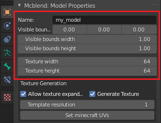
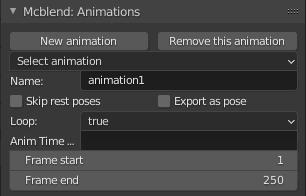

Importing and exporting files
Importing models
- Open to
File -> Import -> Import Bedrock Model - Set the import properties on the right side of the file explorer.
- "Geometry name" lets you specify the name of the model that you want
to import from the file. You can leave it blank to import the first
model from the list. Don't add
geometry.prefix to the model name (it's added automatically).
- "Geometry name" lets you specify the name of the model that you want
to import from the file. You can leave it blank to import the first
model from the list. Don't add
- Find the model file in the file explorer and press import model to finalize the importing.

Exporting models
The "Export models" panel is used to export models. You can set the
name and visible model bounds here. Exported model will automatically add
the geometry. prefix to the name so you don't have to do that.
- Select the armature which represents your model.
- In object properties of the armature you'll be able to change some settings related to exporting. 
- When you finish changing the model settings go to
File -> Export -> Export Bedrock Model - Choose the output path in the file explorer window.
Exporting animations
Note
Mcblend exports animations using key frames. Molang is not supported.
Blender let's you implement various dependencies between animated objects with constraints and rigging. This means that animating one object can affect movement of another object even if the second object doesn't have any key frames. That is why the key frames in Blender animations aren't directly translated to key frames in Minecraft animations. Mcblend collects the time stamps of every keyframe of every bone of the armature and goes through that list looking for movements. Every movement of every bone between two frames is saved to exported file.
The keyframes from Non-linear animations (NLA) are also supported can also be used by Mcblend to detect the movements.

- Go to object mode and select the armature with your model
- In object properties find
Mcblend: Animationpanel. Press "New animation" button or select the animation you want to export withSelect animationdropdown list. - Create your animation and stash the actions of the armature as the NLA tracks. You can combine multiple tracks in one animation. Mcblend remembers which NLA tracks are connected to which NLA tracks and changes the active tracks when you switch the animation.
- In the
Mcblend: Animationyou can fill in the form with the information about the animation to configure it to your preference.- Name - the name of the animation.
- Skip rest poses - whether the bones in rest poses should be exported as a part of animation. A rest pose is a pose with default location, rotation and scale. This setting typically significantly reduces the size of the exported animation.
- Export as pose - exports current frame as a looped animation with a pose instead of exporting full animation.
- Loop - whether the animation should be looped.
- Anim Time Update - the content of this text field is copied to "anim_time_update" property of the Minecraft animation. If you leave it blank than the animation won't use that property.
- Open
File -> Export -> Export Bedrock Animation.
Note
Mcblend uses frame 0 to detect the rest pose of the model. Every movement in the animation is relative to the rest pose. If you're exporting the model and the animation remember to make sure that the animation doesn't change the pose of the model on frame 0 or you may get some unexpected results.